전산응용기계제도기능사 (2007-07-15 기출문제)
1과목: 기계재료 및 요소
1. 비 자성체로서 Cr과 Ni를 함유하며, 일반적으로 18-8 스테인리스강이라 부르는 것은?
- 페라이트계 스테인리스강
- 오스테나이트계스테인리스강
- 마텐자이트계 스테인리스강
- 펄라이트계 스테인리스강
(정답률: 66%)

2. 강의 담금질 조직에서 경도가 큰 순서대로 올바르게 나열한 것은?
- 솔바이트 > 트루스타이트 > 마텐자이트
- 솔바이트 > 마텐자이트 > 트루스타이트
- 트루스타이트 > 솔바이트 > 마텐자이트
- 마텐자이트 > 트루스타이트 > 솔바이트
(정답률: 49%)
3. 황동의 합금성분으로 가장 적합한 것은?
- Cu + Zn
- Cu + Sn
- Cu + Pb
- Cu + Mn
(정답률: 81%)
4. 지름 240㎜ 및 360㎜의 외접 마찰차에서 중심 거리는?
- 60㎜
- 300㎜
- 400㎜
- 600㎜
(정답률: 78%)
5. 절구 베어링이라고도 하며, 세워져 있는 축에 의하여 추력을 받을 때 사용되는 베어링의 종류 명칭으로 가장 적합한 것은?
- 피벗 베어링
- 칼라 베어링
- 단일체 베어링
- 분할 베어링
(정답률: 61%)
6. 다음 원소 중 탄소강의 적열취성 원인이 되는 것은?
- S
- Mn
- P
- Si
(정답률: 54%)
7. 기계운동을 정지 또는 감속 조절하여 위험을 방지하는 장치는?
- 기어
- 브레이크
- 마찰차
- 커플링
(정답률: 91%)
8. 다음 나사의 풀림 방지법 중 틀린 것은?
- 와셔에 의한 방법
- 로크, 너트에 의한 방법
- 부시를 사용하는 방법
- 자동 죔 너트에 의한 방법
(정답률: 66%)
9. 일반적인 보통 V 벨트 전동장치의 속도비 적용범위로 다음 중 가장 적합한 것은?
- 1 : (1 ~ 2)
- 1 : (1 ~ 7)
- 1 : (1 ~ 15)
- 1 : (1 ~ 30)
(정답률: 46%)
10. 주철의 탄소(C) 함유량 범위로 가장 적합한 것은?
- 0.0218 ~ 2.11 %
- 2.11 ~ 6.67 %
- 0.0218 % 이하
- 6.68% 이상
(정답률: 63%)
2과목: 기계가공법 및 안전관리
11. 스프링의 모양에 따른 분류가 아닌 것은?
- 공기 스프링
- 코일 스프링
- 태엽 스프링
- 겹판 스프링
(정답률: 68%)
12. 한 변의 길이가 20㎜인 정사각형 단면의 강재에 4000N의 압축하중이 작용할 때 강재의 내부에 발생하는 압축 응력은 몇 N/㎜2인가?
- 2
- 4
- 10
- 20
(정답률: 52%)
13. 주조용 알루미늄 합금이 아닌 것은?
- 실루민
- 라우탈
- 하이드로날륨
- 두랄루민
(정답률: 42%)
14. 다음 중 절삭유의 종류가 아닌 것은?
- 알칼리성 수용액
- 광유
- 그리스
- 동·식물유
(정답률: 51%)
15. 보스와 축의 둘레에 여러 개의 키(key)를 깎아 붙인 모양으로 큰 동력을 전달할 수 있고 내구력이 크며, 축과 보스의 중심을 정확하게 맞출 수 있는 특징을 가지는 것은?
- 새들키
- 원뿔 키
- 반달 키
- 스플라인
(정답률: 74%)
16. 공작기계의 일반적인 중요 구비조건에 해당 되지 않는 것은?
- 기계의 탄성이 클 것
- 높은 정밀도를 가질 것
- 가공 능력이 클 것
- 내구력이 크며 사용이 간편할 것
(정답률: 73%)
17. 밀링작업에서 안전수칙의 설명으로 틀린 것은?
- 전기의 누전을 점검하다.
- 반지, 팔찌, 목걸이 등을 착용해도 좋다.
- 테이블에 공구나 공작물 등을 올려놓지 않는다.
- 공작물 가공 중에는 기계에 얼굴을 대지 않는다.
(정답률: 87%)
18. 평면을 다듬질하는 일반적인 줄질 방법이 아닌 것은?
- 사진법
- 횡진법
- 후진법
- 직진법
(정답률: 40%)
19. 전기적 양도체 또는 부도체 여부에 관계없이 초음파 발진기를 이용하여 보통 금속과 동일하게 가공할 수 있는 장점을 가지고 있는 것은?
- 초음파 가공
- 전해 연삭가공
- 래핑 가공
- 와이어컷 방전가공
(정답률: 80%)
20. 지름이 50㎜인탄소강으로 스퍼기어를 가공할 때 절삭속도가 60m/min 이고 밀링커터의 지름이 35㎜일 때 회전수는 약 얼마인가?
- 546rpm
- 645rpm
- 725rpm
- 1000rpm
(정답률: 34%)
21. 공작물의 회전과 바이트의 이송을 이용하여 주로 원통형으로 절삭하는 공작 기계는?
- 세이퍼
- 플레이너
- 선반
- 원통연삭기
(정답률: 51%)
22. 선반에서 할 수 없는 작업은?
- 보링(boring) 작업
- 널링(knurling) 작업
- 드릴링(drilling) 작업
- 인덱싱(indexing) 작업
(정답률: 56%)
23. 플레이너의 크기를 표시하는 사항이 아닌 것은?
- 테이블의 크기(길이×나비)
- 공구대의 수평 및 위 아래이동거리
- 테이블의 높이
- 테이블 윗면부터 공구대까지의 최대높이
(정답률: 47%)
24. 원통연삭기에서 그림과 같이 연삭숫돌을 일정한 위치에서 회전시키면서 일감을 좌우로 이송시키거나 연삭숫돌을 좌우로 이송시켜 연삭하는 방식은?
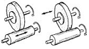
- 트래버스연삭
- 플런지연삭
- 센터리스연삭
- 숫돌이동연삭
(정답률: 30%)
25. 절삭공구의 구비조건으로 틀린 것은?
- 가공 재료보다 경도가 클 것
- 고온에서 경도가 감소되지 않을 것
- 인성강도와 내마모성이 작을 것
- 마찰 계수가 작을 것
(정답률: 70%)
3과목: 기계제도
26. 구의 지름이 20㎜ 일 때 표시방법으로 알맞은 것은?
- SR20
- Sø20
- S20
- 20
(정답률: 55%)
27. 척도의 표시법 A : B 의 설명으로 맞는 것은?
- A는 물체의 실제 크기이다.
- B는 도면에서의 크기이다.
- 배척일 때 B를 1로 나타낸다.
- 현척일 때 A만을 1로 나타낸다.
(정답률: 65%)
28. 인접하는 부분을 참고로 나타내거나 또는 이동한계의 위치를 나타내는 선은?
- 가는 실선
- 굵은 1점 쇄선
- 가는 2점 쇄선
- 가는 파선 또는 굵은 파선
(정답률: 61%)
29. 스케치 할 물체의 표면에 광명단 또는 스탬프잉크를 칠한 다음 용지에 찍어 실형을 그리는 스케치 법은?
- 사진촬영법
- 프린트법
- 프리핸드법
- 본뜨기법
(정답률: 69%)
30. 기계제도에서 표면 거칠기 Rz 가 의미하는 것은?
- 산술 평균 거칠기
- 최대 높이
- 10점 평균 거칠기
- 요철의 평균간격
(정답률: 56%)
31. 데이텀(datum)의 도시 방법으로 맞는 것은?
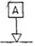
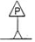
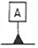
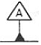
(정답률: 71%)
32. IT 기본공차에서주로축의 끼워맞춤 공차에 적용되는 공차의 등급은?
- IT01 ~ IT5
- IT6 ~ IT10
- IT01 ~IT4
- IT5 ~IT9
(정답률: 47%)
33. 기하공차의 종류 중 동심도공차를 나타내는 기호는?
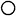
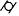
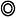
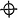
(정답률: 80%)
34. 단면도의 해칭에 관한 설명으로 올바른 것은?
- 해칭부분에 문자, 기호 등을 기입하기 위하여 해칭을 중단할 수 없다.
- 인접한부품의 단면은 해칭선의 방향이나 간격을 변경하지 않고 동일하게 사용한다.
- 보통 해칭선의 각도는 주된 중심선에 대하여 60°로 가는 실선을 사용하여 동일간격으로 그린다.
- 단면 면적이 넓은 경우에는 그 외형선의 안쪽 적절한 범위에 해칭 또는 스머징을 할 수 있다.
(정답률: 57%)
35. 도면에서 ø50H7과의 끼워맞춤에서 틈새가 가장 큰 경우는?
- ø50g6
- ø50n6
- ø50js6
- ø50p6
(정답률: 63%)
36. 다음 중 선과 선이 겹칠 때 가장 우선적으로 그려야 할 선은 어느 것인가?
- 중심선
- 외형선
- 절단선
- 무게 중심선
(정답률: 86%)
37. 다음 치수 기입에 관한 설명 중 옳은 것은?
- 도형의 외형선이나 중심선을 치수선으로 대용하여 사용할 수 있다.
- 치수는 되도록 정면도에 집중하여 기입한다.
- 치수는 되도록 계산해서 구할 필요가 있도록 한다.
- 치수 숫자의 자리수가 많은 경우에는 매 3자리마다 콤마를 붙인다.
(정답률: 64%)
38. 다음의 투상도에 도시된 단면도를 무슨 단면도라 하는가?
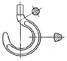
- 온 단면도
- 한쪽단면도
- 부분단면도
- 회전단면도
(정답률: 71%)
39. 다음 그림에서 줄무늬 방향 기호 C가 의미 하는 것은?
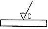
- 가공에 의한 커터의 가공면이45°모따기 기호이다.
- 가공에 의한 커터의 줄무늬가 여러 방향으로 교차 또는 무방향 이다.
- 가공에 의한 커터의 줄무늬가 기호를 기입한 면의 중심에 대하여 대략 레이디얼 모양이다.
- 가공에 의한 커터의 줄무늬가 기호를 기입한 면의 중심에 대하여 대략 동심원 모양이다.
(정답률: 70%)
40. 제 3각법으로 다음의 평면도에 필요한 투상도로 올바른 것은?
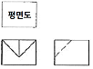
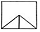
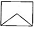
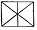
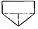
(정답률: 81%)
41. 다음과 같이 제3각법으로 그린 정투상도를 등각투상도로 바르게 표현한 것은?
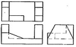
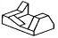
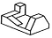
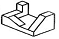
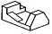
(정답률: 75%)
42. KS의 부문별 기호 중 기계부문 분류 기호는?
- KS A
- KS B
- KS C
- KS D
(정답률: 86%)
43. 다음 중 제3각법에 대한 설명이 아닌 것은?
- 투상도는 정면도를 중심으로 하여 본 위치와 같은 쪽에 그린다.
- 투상면 뒤쪽에 물체를 놓는다.
- 정면도위쪽에 평면도를 그린다.
- 정면도의 좌측에 우측면도를 그린다.
(정답률: 77%)
44. 그림과 같이 대상물의 구멍, 홈 등의 모양을 도시하기 위해 그 필요 부분만을 나타내는 투상도는?
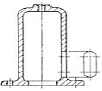
- 보조투상도
- 회전투상도
- 부분투상도
- 국부투상도
(정답률: 68%)
45. 표와 같은 구멍과 축에서 최소 틈새는 얼마인가?
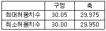
- 0.⑤
- 0.025
- 0.01
- 0.075
(정답률: 73%)
46. 주로프레스 등의 동력 전달용으로 사용되며 축 방향의 큰 하중을 받는 곳에 주로 쓰이는 나사는?
- 미터 나사
- 관용 평행 나사
- 사각 나사
- 둥근 나사
(정답률: 46%)
47. 다음 나사의 도시방법 중 틀린 것은?
- 수나사의 바깥지름은 굵은 실선으로 그린다.
- 암나사의 안지름은 굵은 실선으로 그린다.
- 수나사의 골을 표시하는 선은 가는 실선으로 그린다.
- 가려서 보이지 않는 부분의 나사부는 가는 실선으로 그린다.
(정답률: 59%)
48. 다음 중 평행키의 크기를 나타내는 표시방법은?
- 나비×길이×높이
- 나비×높이×길이
- 높이×길이×나비
- 길이×높이×나비
(정답률: 44%)
49. 축의 도시방법 중 바르게 설명한 것은?
- 긴 축은 중간을 파단하여 짧게 그리되 치수는 실제의 길이를 기입한다.
- 축 끝의 모따기는 각도와 폭을 기입하되 60°모따기인 경우에 한하여 치수 앞에 “C"를 기입한다.
- 둥근 축이나 구멍 등의 일부 면이 평면임을 나타낼 경우에는 굵은실선의 대각선을 그어 표시한다.
- 축에 있는 널링(knurling)의 도시는 빗줄인 경우 축선에 대하여 45°로 엇갈리게 그린다.
(정답률: 67%)
50. V 벨트의 단면을 나타내는 다음 그림에서 벨트의 각 α는 몇 도인가?
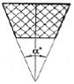
- 30°
- 35°
- 40°
- 45°
(정답률: 42%)
51. 구름베어링의 호칭번호가 “6202”이면 베어링의 안지름은?
- 5mm
- 10mm
- 12mm
- 15mm
(정답률: 69%)
52. 다음 스퍼기어 요목표에서 잇수는?
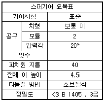
- 5
- 10
- 15
- 20
(정답률: 79%)
53. 축 방향에서 본 모양을 도시 할 때 기어의 이뿌리원을 그리는데 사용되는 선의 종류는?
- 가는 1점 쇄선
- 가는 파선
- 가는 실선
- 굵은 실선
(정답률: 57%)
54. 겹판스프링의제도 방법 중 틀린 것은?
- 겹판 스프링은 원칙적으로 판이 수평인 상태에서 그린다.
- 하중이 걸린 상태에서 그릴 때에는 하중을 명기한다.
- 무하중의 상태로 그릴 때에는 가상선으로 표시한다.
- 모양만을 도시 할 때에는 스프링의 외형을 가는 1점 쇄선으로 그린다.
(정답률: 54%)
55. 배관도의 치수기입 방법에 대한 설명 중 틀린 것은?
- 관이나 밸브 등의 호칭 지름은 관선(pipe line) 밖으로 지시선을 끌어내어 표시한다.
- 치수는 관, 관이음, 밸브의 입구 중심에서 중심까지의 길이로 표시한다.
- 여러 가지 크기의 많은 관이 근접해서 설치된 장치에서는 단선도시 방법으로 그린다.
- 관의 끝 부분에 나사가 없거나 왼나사를 필요로 할 때에는 지시선으로 나타내어 표시한다.
(정답률: 51%)
56. 다음 중 필릿 용접기호는?
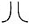
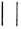
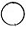
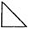
(정답률: 70%)
57. CAD 시스템의 구성 중 출력 장치가 아닌 것은?
- 프린터
- 플로터
- 라이트 펜
- 그래픽 터미널
(정답률: 82%)
58. 컴퓨터 처리 속도의 단위(second)로 올바른 것은?
- 1㎰ = 10-12초
- 1㎱ = 10-6 초
- 1㎲ = 10-9 초
- 1㎳ = 10-2 초
(정답률: 56%)
59. 일반적으로CAD 시스템 좌표계로 사용하지 않는 것은?
- 직교 좌표계
- 극 좌표계
- 원통 좌표계
- 기계좌표계
(정답률: 62%)
60. 와이어프레임 모델링의 특징을 설명한 것 중 틀린 것은?
- 데이터의 구조가 간단하다.
- 처리속도가 느리다.
- 은선을 제거할 수 없다.
- 물리적 성질을 계산할 수 없다.
(정답률: 60%)